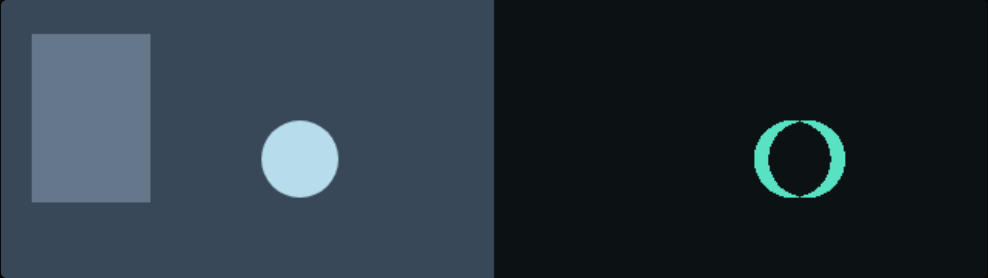
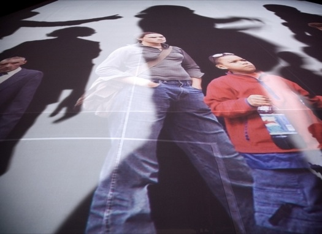
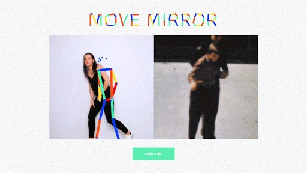

Нейросети, компьютерное зрение и MCP в интерактивных проектах
В интерактивном проекте нужно решить, что система получает от зрителя и как меняется сцена в ответ. Представим поле частиц, которое расходится вокруг ладони. Камера даёт изображение, MediaPipe находит характерные точки кисти, а патч в TouchDesigner превращает координаты в положение точки отталкивания. Радиус и силу эффекта задаёт дизайнер.
Нейросетевая модель может выполнять и другие задачи внутри проекта. В фотобудке ComfyUI обрабатывает снимок посетителя по заданной схеме. В игре модель может интерпретировать реплику игрока, а игровая логика решает, какое действие доступно персонажу. От задачи зависит, где важнее скорость отклика, где уместно ожидание и какие решения остаются за автором.
MCP рассмотрим на этапе разработки. Через такую интеграцию ассистент может прочитать параметры открытого проекта, помочь найти нужный узел или изменить тестовую настройку, если подключение это позволяет. Разберём, какие задачи так можно решать в TouchDesigner, Unreal, Unity и вебе, а затем посмотрим, как компьютерное зрение, генерация изображений и распознавание сигналов работают в готовых проектах.
Нейросеть в процессе разработки
Представим, что мы делаем интерактивную витрину для выставки о море. Пока перед витриной никого нет, на стекле видна спокойная рябь. Когда посетитель подходит, по изображению расходится волна. Если человек остаётся у витрины, волна затихает, а после его ухода экран возвращается к спокойной ряби. До открытия хотим проверить две вещи: с какого расстояния запускать эффект и успевает ли посетитель связать волну со своим шагом.
Разбор проекта. В TouchDesigner уже есть сигнал расстояния и слой с волной. Передаём ассистенту схему патча и короткую запись значений датчика. Просим найти, где непрерывное расстояние превращается в команду запуска, и предложить способ избежать повторов, когда человек стоит на границе зоны. Ответ проверяем по сигналу датчика и моментам запуска волны.
Прототипирование. Просим ассистента предложить логику с двумя порогами. Для первого теста волна запускается при приближении до 1,5 метра, а следующий запуск становится возможен после того, как человек отойдёт дальше 1,8 метра. Проигрываем три случая: человек проходит мимо, останавливается на границе и подходит снова после ухода. Значения уточняем на площадке по реальной траектории посетителей.
Работа с референсом. Загружаем кадр морской поверхности и просим модель описать, где видны тонкие блики и как они отделяются от тёмной воды. Из этого выбираем параметры для ручного теста: яркость гребня, ширину волны и время затухания. На витрине проверяем, читается ли волна при дневном свете. В этом проекте ассистент помогает разобрать патч и спланировать проверки, а во время показа сценой управляют датчик и правила в TouchDesigner.
Как ассистент работает через MCP
MCP, или Model Context Protocol, задаёт способ, которым приложение с ассистентом подключается к внешним инструментам и данным. В нашей схеме Codex или другое приложение с моделью выступает хостом. MCP-клиент внутри хоста общается с сервером, а сервер предоставляет операции для работы с проектом. Какие именно операции доступны, зависит от конкретного подключения. Документация MCP с примерами.
- Человек просит уменьшить скорость частиц
- Ассистент находит операцию для чтения параметров
- MCP-сервер читает значение через интеграцию с проектом
- TouchDesigner применяет согласованное значение
- Ассистент повторно читает параметр и сообщает результат
Инструмент (tool) выполняет операцию, например читает параметр или меняет его значение. Ресурс (resource) предоставляет данные, например описание сцены или таблицу параметров. Шаблон запроса (prompt) помогает начать повторяемую задачу, например разбор структуры патча. Сервер может поддерживать только часть этих возможностей. Примеры инструментов, ресурсов и шаблонов.
Для показа в аудитории удобно сделать два захода. Сначала попросите ассистента перечислить контейнеры и найти источник скорости. Затем попросите снизить её с 0,60 до 0,35 в одном тестовом контейнере. Сравните показание до и после, посмотрите на визуал и верните исходное значение. Если просмотр картинки недоступен через интеграцию, откройте выходной TOP рядом с чатом и оцените реакцию глазами. Названия операций зависят от подключённого сервера.
Операции для просмотра можно открыть шире, а запись ограничить конкретным контейнером и несколькими параметрами. Для аудиторного показа удобно держать копию проекта. Если инструмент сообщает об успешном вызове, сверяем ещё и фактическое значение: канал мог остаться под управлением выражения или экспорта CHOP. Для знакомства с вызовами MCP можно открыть Inspector и сравнить список операций, аргументы и ответ сервера. MCP Inspector.
MCP в TouchDesigner, Unreal, Unity и вебе
Во время разработки ассистент может прочитать структуру проекта, внести ограниченную правку и проверить её тем же инструментом. Например, попросите найти, какой канал управляет яркостью, затем изменить значение в тестовой сцене и снять кадр до и после. В репозитории можно проверить исходный код, а через MCP редактора увидеть состояние открытого проекта. При запуске инсталляции обычный поток данных от датчика всё так же можно передавать по OSC или WebSocket.
| Среда | Интеграция | Что проверить на практике |
|---|---|---|
| TouchDesigner | TDMCP от Derivative запускается внутри проекта как компонент. Доступны операции с узлами, параметрами и результатами рендера. Руководство TDMCP | Открыть копию патча, найти Null CHOP с управляющим каналом, прочитать его значение. Затем изменить только один параметр в тестовом контейнере и сравнить выходной TOP. |
| Unreal Engine | Unreal MCP от Epic предоставляет инструменты редактора. Состав доступных операций зависит от версии и включённых наборов. Документация Epic | Найти акторы источников света и проверить их параметры. Затем изменить интенсивность одного источника в тестовом уровне и посмотреть, сохранилась ли читаемость главного объекта. |
| Unity | Встроенный MCP-сервер пакета Unity AI Assistant объявлен устаревшим. Unity предлагает Unity CLI как замену. Для подключения по MCP есть независимый MCP for Unity от Coplay. Пояснение Unity · Проект Coplay | Прочитать иерархию тестовой сцены, найти объект с компонентом управления светом и проверить привязки. После изменения запустить Play Mode и убедиться, что кнопка действительно меняет состояние сцены. |
| Веб | Chrome DevTools MCP помогает работать с открытой страницей, консолью и производительностью. Playwright MCP подходит для проверки действий пользователя в браузере. Chrome DevTools MCP · Playwright MCP | Открыть веб-пульт, нажать переключатель режима, проверить изменение интерфейса и возможные ошибки в консоли. Повторить сценарий на узком экране и после потери соединения. |
Проверяем одну правку от входа до картинки
Формулировка для ассистента в TouchDesigner: «Найди, что управляет скоростью частиц. Покажи путь от входного канала до визуала. В тестовой копии измени скорость с 0,60 до 0,35 и проверь, изменилось ли фактическое значение». Сравните путь оператора, число и результат в Viewer. Если после изменения параметр вернулся назад, его может перезаписывать экспорт CHOP. Тогда нужно менять источник. Этот же порядок подходит для Unity и Unreal: сначала найти объект и управляющую связь, затем изменить один параметр, запустить сцену и проверить результат.
Нейросеть внутри инсталляции
Во время выставки посетитель управляет сценой через веб-форму или микрофон. Для голоса сначала понадобится распознавание речи. Затем модель преобразует текст в заранее согласованный набор параметров. Приложение проверяет значения и применяет их к сцене. Передачу из приложения в TouchDesigner можно организовать по OSC или WebSocket, как в лекции о протоколах передачи. MCP может пригодиться на этапе сборки, а в работающей инсталляции его имеет смысл использовать, если приложению действительно требуется вызывать доступные через него операции.
- Фраза посетителя
- Структурированный ответ модели
- Проверка диапазонов
- OSC или WebSocket
- Плавное изменение визуала
{
"palette": "storm",
"density": 0.75,
"speed": 0.30,
"brightness": 0.52
}Допустимые палитры задаём списком, числовые параметры проверяем на диапазон 0–1. Если посетитель говорит «слишком темно», передаём модели текущее состояние и разрешаем вернуть только изменение яркости. Приложение объединяет его с текущими настройками. При невалидном ответе сцена сохраняет прежнее состояние. При нескольких запросах подряд нужен понятный порядок: например, результат предыдущего запроса перестаёт применяться, как только принят следующий.
Если человек знает нужное значение, ползунок даёт быстрый и предсказуемый результат. Текст подходит, когда хочется описать настроение и изменить несколько параметров вместе. Пока модель отвечает, визуал может продолжать работать. Пульт оператора позволяет вернуть исходное состояние, а посетитель видит подтверждение, что его запрос принят.
Компьютерное зрение и обработка изображения в реальном времени
Компьютерное зрение извлекает из изображения данные о том, что в кадре и где это находится. Для инсталляции это способ превратить камеру в интерфейс. Система может взять координаты ладони и передать их в поле частиц или получить силуэт и использовать его как маску. Задачу стоит формулировать через выходные данные: точка, рамка, маска, категория или оценка движения.
Часть задач решается обычной обработкой пикселей. Например, вычитание кадров выделяет изменения, а порог по цвету помогает найти яркую метку на спокойном фоне. Для позы человека в разных условиях удобнее обученная модель. Она оценивает положение суставов по изображению. Если человек повернулся боком или перекрыл руку, координаты могут дрожать либо пропасть, поэтому следом за анализом нужна логика взаимодействия.
| Инструмент | Что в нём есть | Когда взять |
|---|---|---|
| OpenCV / OpenCV.js | Обработка кадров, пороги, контуры, вычитание фона и оптический поток. Документация OpenCV | Нужно найти движение или цветную метку, а условия съёмки можно контролировать. Оптический поток полезен, когда важно ещё и направление движения. |
| MediaPipe Tasks Vision | Готовые задачи для ключевых точек, жестов, детекции и сегментации. В вебе используется пакет @mediapipe/tasks-vision. Пример для веба | Нужно получить положение кисти или тела с обычной камеры. В TouchDesigner можно посмотреть данные через компонент сообщества. MediaPipe TouchDesigner |
| TensorFlow.js | Библиотека машинного обучения для JavaScript. В каталоге есть готовые модели для позы и сегментации. Каталог TensorFlow.js | Нужно встроить анализ в веб-сцену, например искать позу и сразу обновлять Canvas или WebGL. |
| ONNX Runtime Web | Среда выполнения совместимых моделей в браузере. Модель и обработку её входов и выходов подбирает разработчик. Руководство ONNX Runtime Web | У команды уже есть модель в формате ONNX, которую нужно запустить в веб-проекте. |
Например, для игры «поймай свет» достаточно точки кисти. Сравниваем её с координатой цели. Если ладонь остаётся внутри цели 300 мс, засчитываем попадание и показываем новую цель. Для проекции на тело понадобилась бы уже маска. Так выбор библиотеки зависит от действия, которое зритель должен совершить, и от данных, необходимых для его проверки.
Один кадр с камеры можно использовать двумя способами. В первом случае это материал для изображения: размываем его, вырезаем силуэт, накладываем след или меняем цвета. Во втором это источник управления: извлекаем координату руки, область движения или положение тела, а исходное видео можем оставить в техническом окне. Часто оба тракта идут параллельно.
| Что вычисляем | Что получаем | Что это даёт в проекте |
|---|---|---|
| Разница кадров | Области изменения яркости | Вспышки там, где человек двигается. Переключение света и движение камеры тоже изменят пиксели. |
| Детекция объектов | Категории, рамки и оценки уверенности | Реакция на появление объекта в зоне. Рамка удобна для событий, её границы грубы для композитинга. |
| Ключевые точки | Координаты кисти, лица или тела | Привязка эффекта к ладони, управление направлением луча, расстояние между руками. |
| Распознавание жеста | Метка жеста и оценка уверенности | Открытая ладонь включает режим управления. Удержание и пауза предотвращают случайные повторы. |
| Сегментация | Маска по пикселям | Силуэт закрывает частицы, фигура отделяется от фона, графика появляется только на одежде или вокруг тела. |
| Оценка глубины | Карта относительной глубины или измерения датчика | Изображение реагирует на приближение. Для расстояний в метрах понадобится подходящий источник и калибровка. |
| Описание кадра | Текст или структурированные признаки | По кнопке модель описывает предмет, который принёс посетитель, и предлагает тему для визуала. Такой анализ удобно запускать отдельным событием. |
- Камера или видеозапись
- Обрезка и уменьшение кадра
- Модель или анализ пикселей
- Координаты, маска или событие
- Графика, звук или состояние сцены
Пример в TouchDesigner. В проекте с MediaPipe посмотрите на кадр с точками кисти и найдите координаты кончиков большого и указательного пальцев. Расстояние между ними можно использовать как сигнал захвата. При сжатии пальцев графика притягивается к кисти, при разжатии продолжает движение. Проверьте, зеркально ли отображается камера и совпадает ли направление Y с координатами сцены. Для устойчивого переключения задайте разные пороги входа и выхода. Например, захват включается при расстоянии меньше 0,04 и отпускается после 0,06. Это пробные значения в нормализованных координатах кадра. Их подбирают на месте или делят расстояние на видимый размер ладони для большей устойчивости при приближении.
Пример в браузере. В демонстрации MediaPipe распознавание жестов можно проверить на камере. Сначала держите ладонь перед собой, затем поверните её ребром или частично закройте другой рукой. Смотрите, что происходит с точками и меткой жеста. В инсталляции короткий провал трекинга можно переждать, удерживая последнее надёжное значение, а после более долгой потери руки плавно вернуть сцену в покой. Документация и браузерная демонстрация Google.
Силуэт как часть композиции. Если в кадре человек должен проходить между двумя слоями графики, сегментация даёт маску для сборки: сначала фон и дальние частицы, затем фигура, сверху ближние частицы. В TouchDesigner можно просматривать маску отдельно и проверять края волос, пальцы и провалы на близких по цвету поверхностях. Примеры масок MediaPipe.
Камера и карта движения
Запустите учебный клип или включите камеру. Слева виден вход, справа подсвечены пиксели, которые изменились между отсчётами. При проверке с камерой попробуйте замереть, затем махнуть рукой. Кадры обрабатываются в браузере.
Карта движения реагирует и на руку, и на включение света. Если проекту нужно знать, где именно находится кисть, добавьте трекинг ключевых точек. Если важна зона изменения, простая разница кадров может решить задачу с меньшей нагрузкой. Для разбора удобно показать четыре окна: вход, технический результат, очищенный сигнал и финальное изображение.

Как собрать аналог в TouchDesigner. Подайте изображение с Video Device In TOP или Movie File In TOP в две ветки. Одна идёт напрямую, вторая хранит предыдущий кадр. Сравните их через Difference TOP, затем порогом выделите заметные изменения. Получившуюся текстуру можно использовать как маску для свечения или плотности частиц. Если нужно одно число для всей сцены, усредните маску и используйте долю активных пикселей. Для трекинга кисти замените этот тракт на выход ключевых точек MediaPipe и сглаживайте уже координаты, а не изображение. Интеграция MediaPipe для TouchDesigner.
Задержка и устойчивость. Рендер может обновляться 60 раз в секунду, а анализ камеры, например, 15 раз. Это отдельные частоты. Сцена получает последнее доступное измерение и плавно обновляется между измерениями. При медленном анализе лучше отбрасывать устаревшие кадры, чтобы очередь не отодвигала реакцию всё дальше от движения человека. Для отдельного смыслового запроса отправляйте выбранный кадр или короткую последовательность в зависимости от возможностей модели и задачи.
Проверьте сцену с человеком вблизи и вдали, на светлом и тёмном фоне, с двумя посетителями и при пустом кадре. Для камеры на выставке заранее определите, отображается ли исходное видео, остаётся ли оно на компьютере и нужна ли запись. Для эффекта, основанного на кисти, часто достаточно хранить текущее состояние и передавать координаты.
В нашем примере модель меняет атмосферу по запросу, камера управляет положением эффекта, а графический движок отвечает за движение и сборку кадра. На показе легко проверить вклад каждой части: переключить настроение текстом, подвигать рукой, затем остановить трекинг и посмотреть, как сцена возвращается в спокойное состояние.
Практический пример MediaPipe в браузере
Соберите веб-сцену, где ладонь ведёт световое пятно, а щипок фиксирует его на месте. Камера запускается после нажатия кнопки. Hand Landmarker из MediaPipe Tasks Vision возвращает координаты кисти. Возьмите центр ладони для положения, а расстояние между большим и указательным пальцами переведите в событие захвата. Для Canvas умножьте нормализованные координаты на размеры холста. Если предпросмотр зеркальный, используйте 1 - x при отображении. Hand Landmarker для JavaScript.
Сделайте два порога для щипка, чтобы режим не переключался на каждом кадре возле границы. Нормируйте расстояние по размеру ладони, чтобы жест сохранился при приближении к камере. При потере кисти удержите последнее положение короткое время и плавно верните пятно в центр. Сравните результат рядом с предпросмотром ключевых точек. Ту же логику можно перенести в TouchDesigner, где выход трекинга заменяет данные из браузера. Для готового браузерного примера откройте демонстрацию Google на странице задачи. MediaPipe Gesture Recognizer с веб-демо.
Компьютерное зрение в готовых проектах
Body Movies, Рафаэль Лосано-Хеммер. На фасаде видны гигантские тени прохожих, внутри которых открываются портреты. Камера отслеживает тени. Когда зрители открывают все портреты сцены, система переключает набор изображений. Здесь зрение помогает определить состояние всей композиции, а свет и сами люди создают её в пространстве. Страница работы и документация автора.

Move Mirror, Google Creative Lab. Браузер определяет позу человека с помощью PoseNet и TensorFlow.js, затем ищет в коллекции фотографию с похожей позой. Для сравнения важна конфигурация точек тела. Интерфейс превращает поиск по фотографиям в игру с движением. Страница эксперимента.

ComfyUI в интерактивном проекте
ComfyUI собирает обработку из узлов. В одном графе можно загрузить изображение, применить маску, выбрать модель и получить результат. Stable Diffusion и SDXL здесь примеры моделей, которые можно использовать в подходящем графе. Для интерактивного проекта удобно распределить работу так: TouchDesigner принимает действия зрителя и показывает результат, а ComfyUI выполняет заранее проверенную цепочку обработки.
- Посетитель нажимает кнопку
- TouchDesigner фиксирует кадр
- ComfyUI обрабатывает кадр по графу
- TouchDesigner загружает результат
- Изображение появляется в композиции
Image-to-image. Возьмём кадр с камеры и попросим превратить сцену в гравюру. В типичном графе для Stable Diffusion исходник кодируется в латентное представление, а сэмплер меняет его с учётом промпта. При низком denoise изменения обычно осторожнее, при высоком модель свободнее перестраивает изображение. Удобно взять один кадр и сравнить несколько значений с одинаковыми моделью, размером и seed. По результату видно, где фактура уже изменилась, а силуэт ещё читается.
Маска, глубина и поза. Маска выбирает область редактирования, например фон фотобудки. Карта глубины задаёт приблизительное расположение планов. Ключевые точки позы задают положение частей тела. Совместимый ControlNet может использовать такую карту как дополнительное условие генерации. Для сохранения точного логотипа или силуэта исходный слой можно собрать поверх результата в TouchDesigner. В учебном сравнении покажите рядом исходник, управляющую карту и результат. Примеры ControlNet в ComfyUI · Шаблон редактирования по маске.
Как связать среды. Сначала проверьте граф вручную на одном файле. Затем экспортируйте его в формате API. Приложение передаёт входной файл, подставляет значения в нужные узлы и ставит граф в очередь через /prompt. Идентификатор задания позволяет дождаться именно своего результата. События выполнения можно получать по WebSocket, а сохранённый результат искать через историю задания. Состояния «готово к съёмке», «обработка», «результат» и «ошибка» удобно держать в одном контроллере интерфейса. Маршруты сервера ComfyUI.
Стилизация живого потока. Для зеркала, которое меняется вместе со зрителем, важнее задержка и стабильность кадров. Обычная очередь отдельных изображений может отставать. Для такого случая существуют специализированные решения, например StreamDiffusionTD. TouchDesigner подаёт видеосигнал, получает обработанные кадры и собирает их с остальной графикой. Проверьте задержку от жеста до картинки и мерцание на неподвижном фоне. Одинаковый seed помогает в сравнении настроек, но сам по себе не гарантирует согласованность видео. Документация StreamDiffusionTD.
Практический пример фотобудки
Сделайте три состояния интерфейса: ожидание, обработка и результат. По кнопке TouchDesigner сохраняет один кадр и передаёт его в ComfyUI. Граф получает снимок, маску фона и выбранный стиль. По завершении TouchDesigner загружает результат и показывает его рядом с исходником. Если посетитель нажал дважды, оставьте одно активное задание и покажите, что обработка уже началась. При ошибке верните кнопку и предложите повторить снимок. Проверьте поведение сначала на одном файле, затем на реальном потоке посетителей.
Проведите три теста на одном кадре. Сначала замените фон по маске, затем измените стиль всего кадра через image-to-image, наконец попробуйте сохранить расположение объектов с картой глубины и совместимой моделью. Сравните, где лицо и силуэт остаются узнаваемыми. Для показа без ожидания подготовьте пару сохранённых результатов. В живом показе оставляйте на экране исходное превью до появления нового изображения.
Нейросети для звука и других сигналов
| Задача | Вход и выход | Реакция проекта |
|---|---|---|
| Отличить звук хлопка от речи | Короткий блок аудио → оценки классов YAMNet. | Вспышка при достаточно уверенном совпадении. После активации ставим короткую паузу, чтобы один хлопок не породил несколько событий. |
| Принять голосовую команду | Запись по кнопке → текст через модель распознавания речи. | Фраза «сделай холоднее» меняет палитру. Интерфейс показывает распознанный текст и подтверждает выбранный режим. |
| Прочитать жест с носимого контроллера | Последовательность измерений акселерометра и гироскопа → класс жеста. | Два жеста меняют формы. Для пробы запишите несколько дублей каждого жеста и обычного движения, а качество проверяйте на новых дублях. |
| Описать предмет, который показал зритель | Снимок по кнопке → описание или категория. | Выбрать подготовленную палитру из списка. Если ответ не распознан, предложить сделать снимок ещё раз. |
Для аудиопримера сравните Audio Classifier с простой проверкой громкости. Громкость быстро реагирует на любой сильный звук, классификатор пытается различать тип события. Проверьте реакцию на хлопок, голос и собственный звук колонок. Для голосовой команды сохраняйте ручную кнопку на пульте, чтобы сценой можно было управлять в шумном зале. Audio Classifier и веб-демо · Модель распознавания речи Whisper.
Что меняется в играх
NPC и диалог. Модель может формулировать ответ с учётом роли героя и текущей сцены. Например, игрок спрашивает проводника о закрытой двери. Проводнику передают состояние квеста и известные ему факты. Он выбирает, что сообщить, а изменение квеста выполняет игровой код после проверки. Для сравнения попробуйте три запроса: прямой вопрос, тот же вопрос другими словами и просьбу открыть дверь раньше времени. В прототипе Ubisoft NEO NPC исследуется разговор с персонажем в контексте сцены. Разбор прототипа Ubisoft.
Напарник и действия в мире. В PUBG Ally игрок может обращаться к напарнику голосом. Для учебной версии в Unity или Unreal ограничьте действия тремя командами, например подойти, ждать и указать направление. Модель выбирает действие и допустимую цель, а навигация и игровая логика выполняют команду. Если путь закрыт, напарник сообщает об этом и ждёт следующего действия. Проверьте, что реплика героя соответствует тому, что реально произошло в сцене. Технический разбор KRAFTON и NVIDIA.
Среда, которая меняется. В обычном проекте можно разрешить модели выбрать проверенный пресет зоны, если игрок попросит сделать её туманной или ночной. Движок применяет свет, туман и материалы из набора, сохраняя геометрию, коллизии и правила. Сравните это с Genie 3. В исследовательской демонстрации модель генерирует изображение среды в ответ на управление пользователя. Для дизайнера здесь интересно, насколько последовательно мир выглядит при движении и возвращении назад. Исследовательская демонстрация Google DeepMind.
Как выбрать механику взаимодействия
Начните с темпа действия. Жест рукой должен отразиться в графике почти сразу. Смена общего настроения может происходить реже и плавнее. Снимок для фотобудки допускает отдельное ожидание, если интерфейс показывает ход обработки. У одного проекта могут быть все три темпа.
| Действие человека | Что делает система | Как сохраняется отзывчивость |
|---|---|---|
| «Сделай спокойнее» | Языковая модель выбирает параметры из разрешённого набора. | Сцена продолжает двигаться. При ответе скорость плавно приближается к целевому значению. |
| Человек перемещает ладонь | Модель зрения обновляет координаты, графика притягивается к ним. | Рендер использует последнее измерение и сглаживает координаты между кадрами анализа. |
| Посетитель показывает предмет | Модель анализирует выбранный кадр, возвращает категорию или короткое описание. | Снимок делается по кнопке или после удержания предмета в зоне. Интерфейс сразу подтверждает захват. |
| Посетитель хочет новый портрет | ComfyUI генерирует изображение по снимку и выбранному стилю. | В очереди ограничено число заданий, а предварительный кадр остаётся на экране до получения результата. |
| Музыкант меняет интенсивность выступления | Аудиоанализ управляет яркостью и размером в реальном времени. Генерация обновляет текстуру по отдельному событию. | Графика откликается на звук даже во время ожидания новой текстуры. |
Удобный пример для показа объединяет три операции. Фраза «море перед грозой» выбирает пресет. Ладонь управляет полем частиц через трекинг. Кнопка «Сохранить кадр» отправляет снимок текущего визуала в ComfyUI для стилизации. На экране оператора можно увидеть время захвата, полученные координаты и статус генерации. По этим трём сигналам легко понять, какая часть отвечает за реакцию, а какая за новый материал.